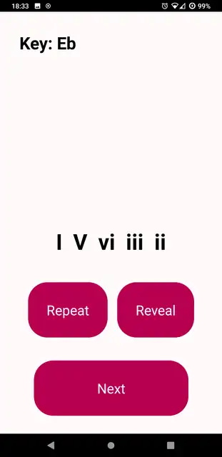

Easy Ear Trainer for Chord Progressions
صوت وفيديو وموسيقى
This is a really simple Ear training app for chord progressions. Plays a chord progression starting with the tonic (I) and plays 4 other chords afterwards. Currently the app doesn't have many other featuresy but inversions, dominant chords and different settings to customize your practice are planne
✓ ترخيص مفتوح (GPL-3.0-only) · آخر تحديث: 2021-08-14
0.1.9الإصدار
29.3 MBالحجم
GPL-3.0-onlyالرخصة
Open in Kanzتحميل APK (29.3 MB)
Download APK
SHA-256: f5a310884fd37653a4135f04cf20a8ec440b4105a20293cfe6f8f4cf45c3e3c5

امسح الكود لفتح صفحة التطبيق
Scan to open this app page
لو كنز مش متثبت عندك: نزّل متجر كنز.
Not installed? Get the Kanz store.